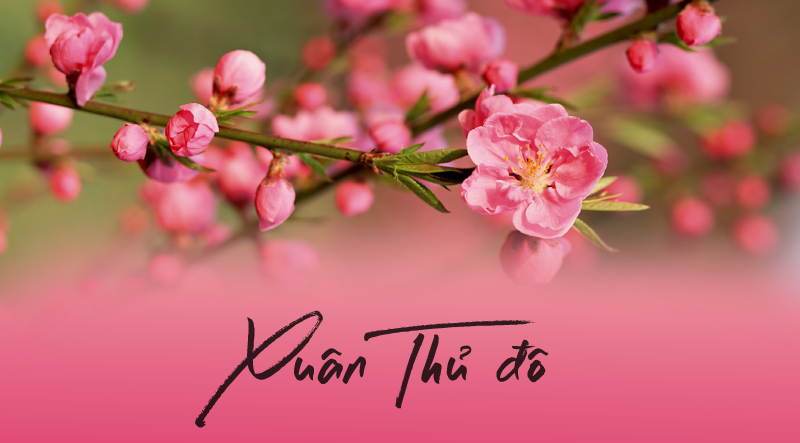
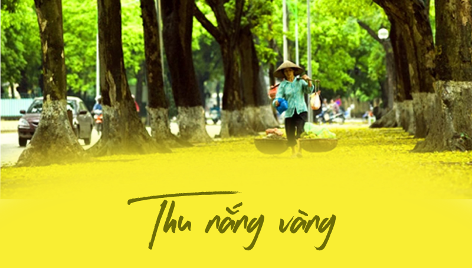
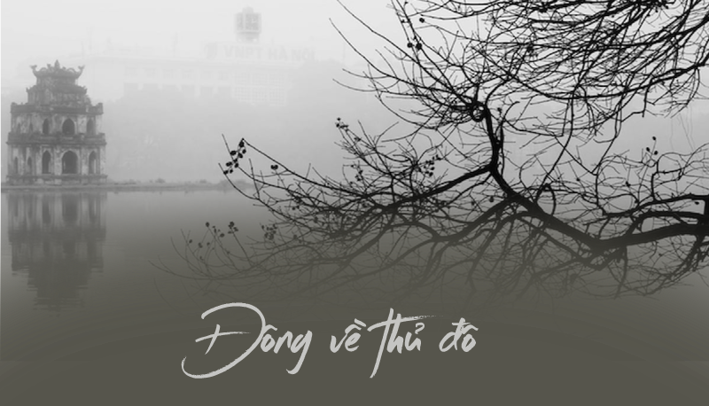

Mùa Xuân
khí hậu Hà Nội rất dễ chịu, có chút se lạnh nhưng không quá rét như mùa đông, vẫn sẽ có những cơn mưa phảng phất. Đây là thời điểm cây cối đâm chồi nảy lộc, trăm hoa đua nở sau một mà đông giá rét. Mùa xuân được ví von như là mùa của sự đoàn viên, sung túc, hạnh phúc và ấm no. Ngoài ra, mùa xuân cũng được coi là thời điểm lý tưởng cho hành trình du lịch Hà Nội của bạn, khí hậu Hà Nội cũng không quá lạnh để bạn vi vu phố phường. Ghé Thủ đô dịp đầu năm, bạn sẽ được ngắm những loài hoa đặc trưng như hoa ban, hoa sưa, hay thăm thú những con phố được trang trí rực rỡ chuẩn bị đón Tết. Không chỉ vậy, thời điểm này, Hà Nội còn có những lễ hội truyền thống vô cùng hấp dẫn như lễ hội Đống Đa, lễ hội đấu vật Liễu Đôi, lễ hội Gióng và lễ hội đền Đồng Cổ Loa…
Địa điểm du lịch gợi ý:
- Ghé thăm làng hoa Hà Nội
- Hồ Hoàn Kiếm
- Bãi đá sông Hồng
Mùa Hè
Mùa hè ở Hà Nội khá nóng và ẩm, Hà Nội, đón nhận những đợt nắng nóng, tiết trời oi ả với nhiệt độ trung bình khoảng 30 độ C đến 32 độ C, có thời điểm lên tới 40 độ C. Đi kèm những ngày nắng nóng kéo dài, thành phố còn có những cơn dông hoặc mưa lớn thất thường. Nhờ điều kiện thuận lợi nên mùa Hè nhiều loại cây đua nhau ra hoa, tạo nên một bức tranh Hà Nội đầy màu sắc. Vào mùa Hè, du khách đến Hà Nội cũng có thể chiêm ngưỡng vẻ đẹp của các loài hoa khác từ những giỏ hoa loa kèn chất đầy gánh hàng rong dọc phố đến cánh đồng sen Hồ Tây thơm ngát... Chính sự kết hợp giữa ánh nắng vàng phản chiếu qua kẽ lá và sắc rực rỡ của những loài hoa này đã tạo nên vẻ đẹp bình dị của Hà Nội vào Hè. Đến với Hà Nội vào mùa Hè, du khách có thể bắt gặp sắc đỏ rực rỡ của hoa phượng trên nhiều tuyến phố như: Láng, Thanh Niên, Phan Đình Phùng hay quanh Hồ Tây, Hồ Hoàn Kiếm, Phượng vĩ nở từ tháng 4 đến tháng 6 cho tới khi sắp mùa tựu trường mới tàn. Phượng đỏ đan xen cùng tiếng ve râm ran kêu luôn khiến du khách nhớ về những kỷ niệm đẹp thời học sinh. Bằng lăng tím nở hoa, tàn úa cả một góc trời khiến nhiều du khách yêu thích chụp ảnh.
Địa điểm du lịch gợi ý:
- Thiên đường Bảo Sơn
- Nhà thờ Lớn Hà Nội
- Thủy cung Times City
- Khu du lịch Khoang Xanh - Suối Tiên
Mùa Thu
Mùa thu là mùa đẹp nhất ở Hà Nội, với thời tiết mát mẻ và trong lành. Nhiệt độ dao động từ 20°C đến 27°C. Đây là thời điểm lý tưởng để dạo chơi và thưởng thức các món ăn vặt đường phố khí hậu Hà Nội vào mùa này có thể xem là đẹp nhất và lãng mạn nhất trong năm. Lúc này, thời tiết Hà Nội rất đỗi nhẹ nhàng, ít mưa hơn, cũng không còn những cơn nắng gắt, lại không quá lạnh. Mùa thu Thủ đô gây ấn tượng với du khách chính bởi tiết trời dễ chịu, lá cây bắt đầu chuyển sang màu vàng, vừa dạo bước trên đường phố vừa ngắm nhìn những chiếc lá rơi rơi thật thơ mộng phải không.
Địa điểm du lịch gợi ý:
- Vườn hoa Nhật Tân
- Hồ Tây
- Phố Cổ Hà Nội
Mùa Đông
Mùa đông ở Hà Nội khá lạnh, nhiệt độ có thể xuống dưới 10°C. Đây là thời điểm thích hợp để thưởng thức các món ăn nóng như phở, bún chả, và ngắm cảnh trong các khu vực như Hồ Hoàn Kiếm.
Đông về, phố phường dường như trầm lắng hơn trong cái lạnh, tạo nên không gian yên tĩnh và hoài niệm. Mùa đông cũng là dịp lý tưởng để thưởng thức những món ăn nóng hổi đặc trưng của xứ kinh kỳ.
Địa điểm du lịch gợi ý:
- Hồ Hoàn Kiếm
- Nhà thờ Lớn Hà Nội
- Chợ Giáng Sinh